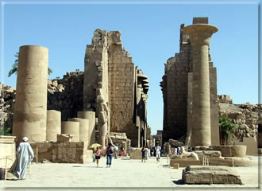

EGYIPTOMI UTAZÁS
Hajózás a Níluson

Az egyiptomi utazás egyik, sokak számára elérhetetlen különlegessége volt korábban, mára népszerû turista programmá váltak a nílusi hajóutak. Az utazás egyszerre élmény testnek és az õsi világ kultúrájának megismerésére vágyó szellemnek. Ötcsillagos hajók indulnak Luxorból és járják be az egyiptomi kultúra fõ verõerét, viszik el az utazót legszebb kincseihez. A Nílus évenkénti áradása teremtette meg a fáraók országának gazdagságát, és az õsi Egyiptomban ezért különös tisztelettel adóztak a folyónak és mintegy köszönetük mellé építették legfontosabb templomaikat. A hajók miközben felfelé haladnak a Níluson nemcsak Egyiptom kies táját szelik át, hanem kultúrája bölcsõjét is. A hajó megáll mindazoknál az építészeti emlékeknél, azzá tették az országot, ami: csodálatra méltó látnivalók kifogyhatatlan tárházává. Az utazás átöleli Egyiptom összes fontosabb emlékét, az utazás elején mód nyílik Kairó és Gíza piramisainak megtekintésére, útba ejtik a Királyok völgyét, Hassepszut királynõ templomát, a Memmon kolosszust, Edfu és Kom Ombó templomait, Asszuánt ás az Elefánt-szigetet. Egy hét felejthetetlen barangolás egy máig ismeretlen világ relikviái között.
Karnaki templom-együttes
Egyiptomi utazásunk egyik legszebb látnivalója a Karnaki templom-együttes. Luxorból a legtöbben busszal vagy konflissal mennek Karnakba, de aki ráér annak - a látvány miatt - megéri a gyalogos séta. Három kilóméter a távolság, és aki nem a Nílus parti sétányon megy, hanem keresztül kasul a külvárosi utcákon, az találkozni fog a valódi Egyiptom arcával. Sok gyerek, meglepõ szegénység, mindenfelé állatok, bizony ez is az utazás nagy látnivalói közé tartozik. De amint feltûnik Karnak , mindent elfelejt a látogató. Itthon már mindenki látott róla képeket, olvasgatta az útikönyvet, próbálta elképzelni, milyen is lehet? Ez az a hely, ahol az elõképzésnek nem sok hasznát lehet venni. Hatalmas területen fekszik, és olyan sok épület maradványait láthatjuk, hogy nehéz térképszerûen magunk elõtt látni. Szerencsére a látvány magával ragad bennünket, az útikönyv bogarászása is általában elmarad. Tudni kell, hogy az épületek sokasága nem egyszerre, hanem kb. kétezer éven át épült, így dinasztiánként változott a kép és gyakran az elõdök által épített remekmûvek anyagát használták.